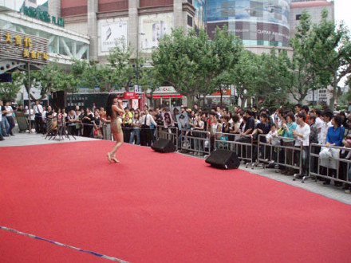

← 返回索引
｜ 黄龄新浪博客离线存档
我的新歌发表会！
2007-06-14 10:48
6月3号的时候，在香港广场举办了我的首次新歌发表会，我真的是期待了很久阿！那天特别的开心，一口气唱了6首歌。还首次介绍自己的专辑给所有来看我表演的朋友们，真的很感谢你们！
人好多,好开心!

这张我有点肿
曾经一起度过3年排球队生活的队友也来为我加油,她在两年前去了韩国念书.这次特地赶回来看我.排球不练之后大家就分道扬镳,没有相隔将近6年了,我们还能再见面!很感动...很怀念以前队里的生活...
超级无敌可爱宝宝-陈安琪,太可爱了...她是我最小的粉丝...哈哈哈哈哈哈
互动中,唐甲姐姐采访的这位小姐,她居然已经完全会唱我的<痒>了,当时真的让我很惊讶...我开心她喜欢的歌...
这位男生也很可爱,我们一起翘着兰花指,唱着<痒>
← 返回全部文章索引